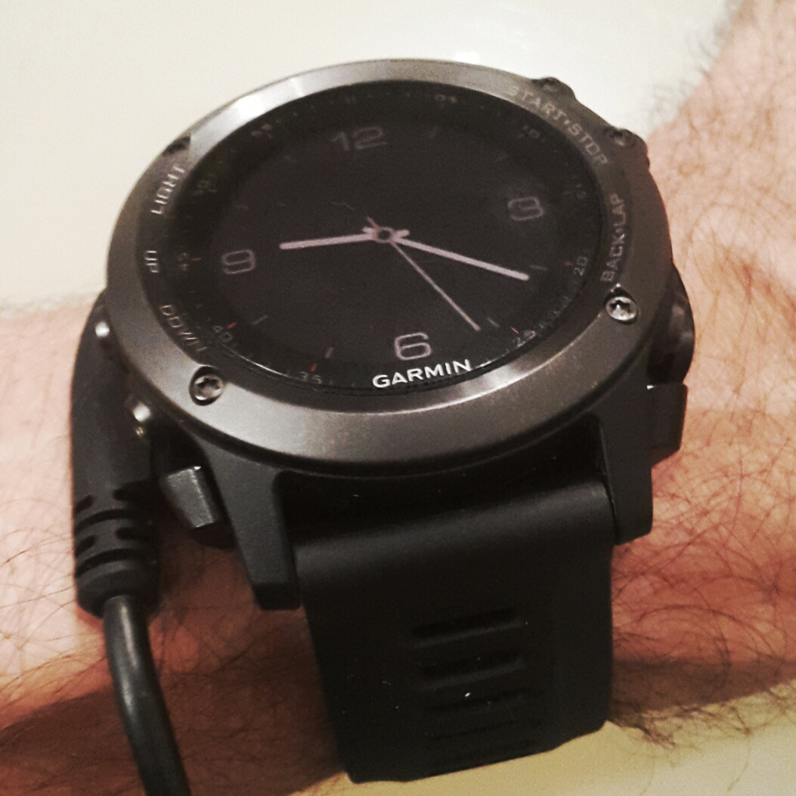
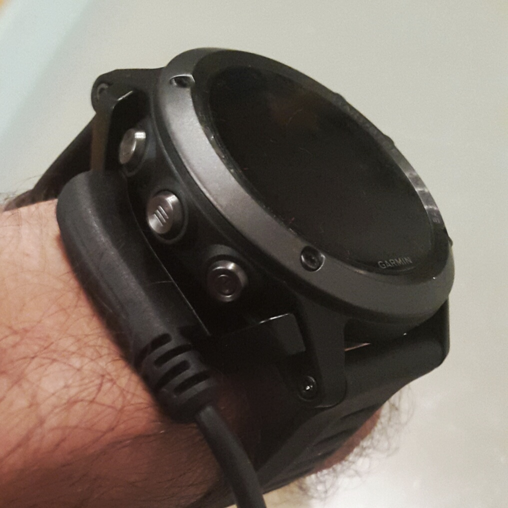
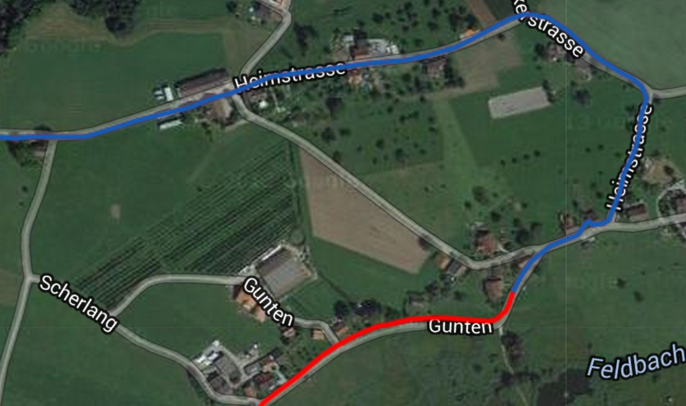
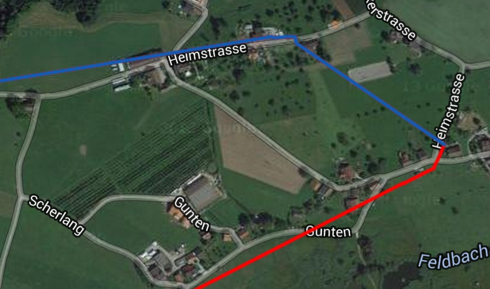
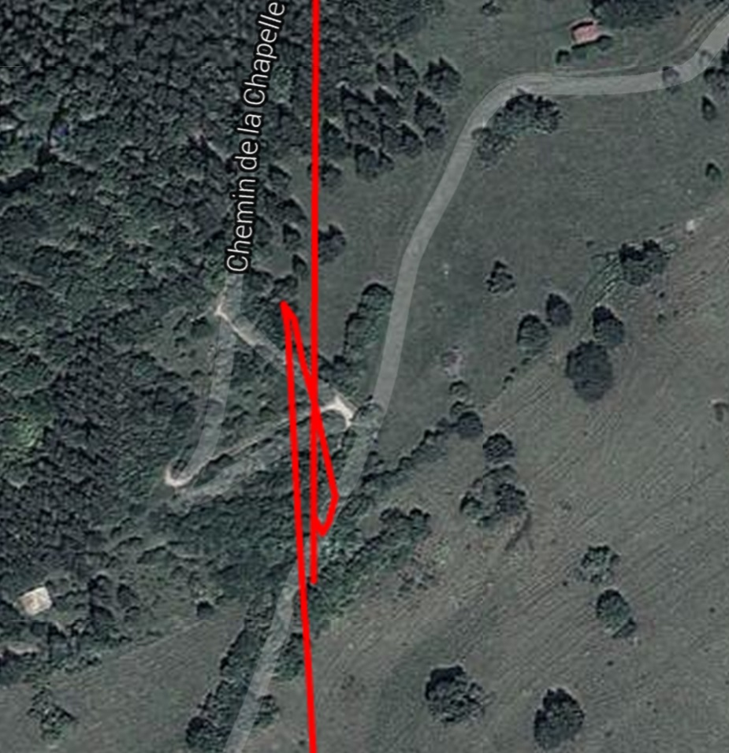
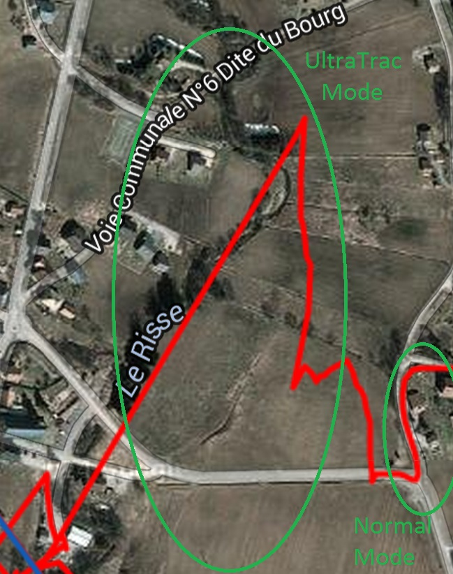
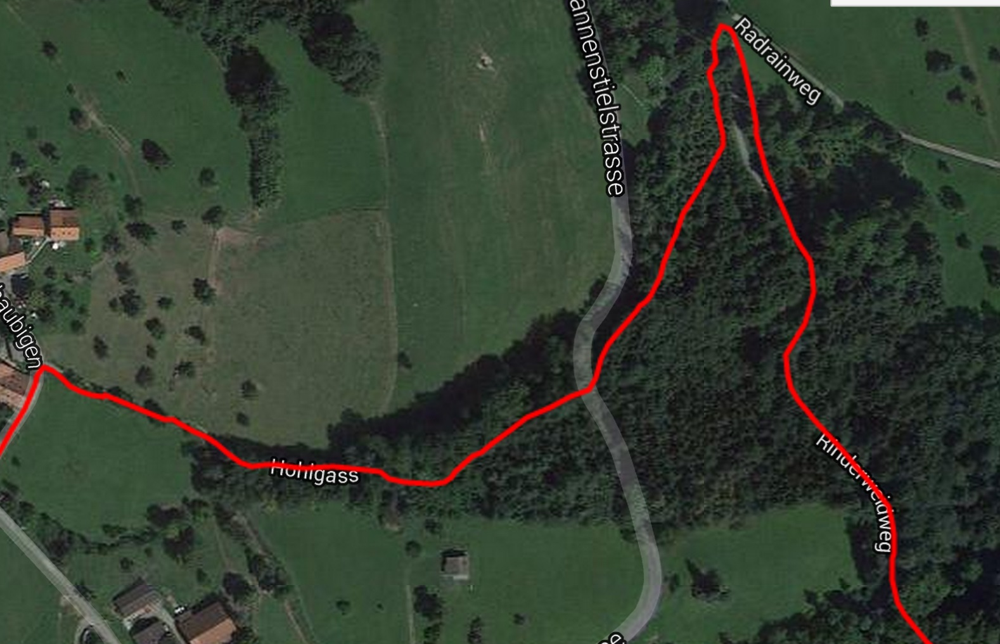
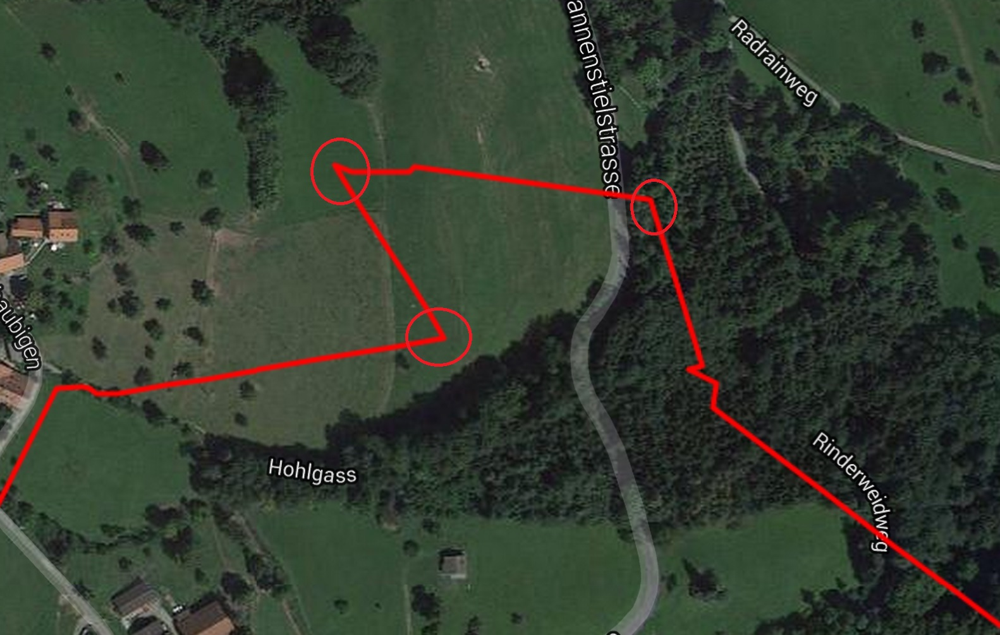

Garmin Fenix 3 UltraTrac Mode Review
With long battery life in GPS mode, phones would be the unit of choice for many of us - we carry one anyway ;) Yet once the decision has been taken by the avid runner to buy a GPS unit, battery life still comes in the buying process: brands propose different options of weight and price depending of how much life you need.
Up to 10h activities, GPS watches - for many years already - have been providing enough power. Now for the ultra-runner and multi-day activities, they often need more and that is where the challenges start.
To help on this, the Garmin Fenix 3 proposes an extended battery-life mode called "UltraTrac" that promises 50h of battery life. So we thought we would give it a try and see if the tradeoffs make it a reasonnable option for ultra-running.
Summary of the findings:
- Do not necessarily trust your experience from the previous versions of Garmin UltraTrac, as implementation has changed
- Do not trust a simple test in your backyard before going for the real thing; results in battery life, location and distance can vary a lot depending of conditions
- UltraTrac improves battery life by a good x2 factor - you can reach 30h-50h depending of ease of capture of the GPS signal
- The refresh rate (every ~90s) is much lower than Normal Mode (1s); that creates a few cut corners, partially compensated with the accelerometer to fill-in the gaps
- The big issue is that accuracy is way reduced: location could be spot on, but occasionally it would be off by 30m to 100m; combined with the difficulty for the acceleromater to auto-calibrate in rugged environments, measured distance can be off by 20% on a route of several hours
- Elevation is set only once from GPS instead of continiously, but in stable weather it is still amazingly good
Conclusion
UltraTrac is pretty much useless for both training (wrong distance) and navigation (wrong location). You will be better off carrying a powerbank to recharge on the go if you think you might exceed 12h.
Switch to UltraTrac only as a last resort and if you have a map with you.
The remainder of this document will go into all the details and provide the background for this opinion.
Differences with previous implementations
Interestingly, UltraTrac works a bit differently on the new Fenix 3 vs. previous generation. For instance, you cannot select an explicit refresh rate anymomre - eg. 5s or 60s. HRM is however now available.
So whatever has been your experience with UltraTrac, it is reasonnable to think that a fresh implementation will impact other factors such as autonomy and route recording.
Autonomy
The User's Manual gives good advices to maximize battery life:
- Shorten the backlight timeout
- Shorten the timeout to watch mode
- Turn off activity tracking
- Select the Smart recording interval
- Turn off GLONASS
- Turn off the Bluetooth® wireless feature
- Turn off the Wi‑Fi® wireless feature
Applying these techniques, I have used the Garmin Fenix 3 for about 1000km now. I have found a lot of variability in battery life of its Normal Mode - anywhere from 12h to 20h. It seems to be related to the ease of capturing the GPS signal: in open-field you get a much better battery life than navigating in the mountains, with peaks and cliffs blocking the signal.
UltraTrac improves it, but not by that big a factor. Here are some real-world data on the Trail des Allobroges:
- first 5 hours, UltraTrac Mode: used 10% of battery life; estimated battery life 33h
- last 7 hours, Normal Mode: used 35% of battery life; estimated battery life 20h
Things are better of course, but not a life changing event. Altough taking less readings allows to use less energy, it is compensated by the fact that the location of the satellites must be re-acquired each time and that is a costly operation. At the end of the day, things even out and you do not gain that much.
Now, admittidely it is not a apple-to-apple comparaison. It would worth to test it again on the exact same route. But still the point is valid, one cannot claim blindly that using UltraTrac will give 50h of autonomy.
An important trick not well advertised is the ability to recharge while using the watch in an activity. The watch must be set to "USB Storage = Garmin", and the connector is flat enough to be worn while running:


Cutting Corners
UltraTrac basically works by turning on the GPS only every 90s.
With less points taken, as expected a few corners will be cut. Here is the same portion recorded with the 2 modes:
- Normal Mode: trace nicely recorded around the field and following the road precisely

- UltraTrac Mode: with only two points, the extrapolated route in direct line makes the runner go cross-country

Now, if you go slower obviously this pattern will be much less seen. At walking pace, the refresh rate is still ~90s and thus you will get more points per km.
What is the impact of the corner cutting ? Well, on simple routes not too bad - you stay within less than 5%. In-between the readings, the watch will use its accelerometer to estimate your moving speed: you can validate that by staying still and just moving your wrist, distance will increase. All seem reasonnable so far.
But before thinking you can use it on the field, read-on to see another error pattern.
Approximate Location
As explained above, typically UltraTrac gives fair figures. However, every once in a while accuracy will be totally off - sometimes by a good 100m. Partly because of this "jumping around", you can see a bigger recorded distance than reality - I got a whopping +20% on a 34k route !
Below a couple examples:
- Here it looks as if I went backward:

- Here the point in the middle of the field is way off. Switching mode to Normal immediatly puts the
trace back on the road actually taken:

- An apple-to-apple comparaison on the same route, showing a 1km section (over 5min, leaving in theory plenty of time for the GPS to resync) :

Even in cases where a change of direction is recorded, and would you think a proper GPS reading has been done at that time, the inflexion points (circled above in red) are way off by up to 200m.
How to explain these discrepencies ?
As the position of the satellites has to be fully reacquired between two readings, sometimes it does as much as it can within the time allocated and comes up with a very approximate value - which in turn can increase dramatically the measured distance impacted by this Brownian noise. On top of that, if you change direction right after the GPS turns off route will be wrongly extrapolated.
These innacuracies are important to know for navigation purpose, if you try to follow a track or relocate on a map. However this alone cannot explain the 6k difference over 34k of course.
The accelerometer is calibrated based on your previous runs (probably relating cadence to speed). While it may work on even ground, in practice up and down the mountains, using poles, etc. just make the inclusion of the accelorometer another big source of uncertainty. Having the option to stick to a straight line interpolation would probably be a good choice.
Elevation Data
On the 12h activity described above, I had UltraTrac on for 5 hours and Normal Mode for 7 hours. Elevation data were +16444ft and -16526ft. Hard to be more precise ! At least in stable weather, UtraTrac option and its disablling of auto-calibration of the barimeter does not create any problem.
Conclusion
From short training runs to full day adventures up to 12h, the battery life of the Fenix is very good and there is really no reason to use anything else than the Normal mode.
For 100 milers in mountaineous conditions or multi-day adventures, the concept to combine GPS localization and the built-in accelerometer to increase battery life is a great one. In most cases, you get accurate reading of the distance within a few percents - which is very reasonnable for navigation in the wildernes.
Unfortunatly, every once in a while UltraTrac will cause the watch to be just dead in the water. Your position can be off by hundreds of meters, so you'd be totally confused if you try to follow a GPS track. The cumulated effect of wrong positions can create a 20% increase from m easured to actual distance - giving you a totally wrong sense of how far the next aid station is for instance.
Bottom line, wether the course is marked or not it is really hard to find a suitable usecase for UltraTrac. It's only to be used if your battery drops below 10% and you still have a couple of hours ahead of you.
In cases where I know I would be on the borderline, I'd rather take a small powerbank with me than rely on UltraTrac.